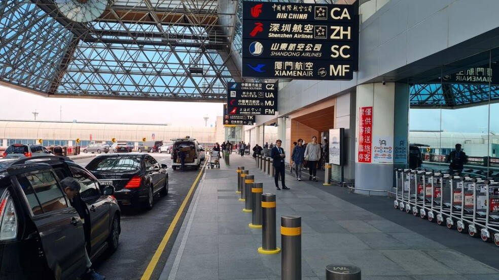
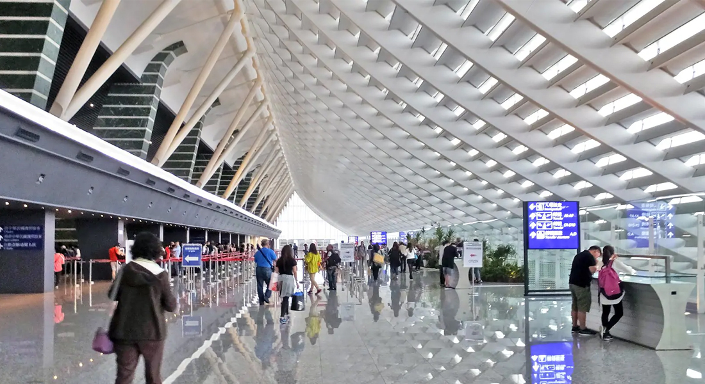
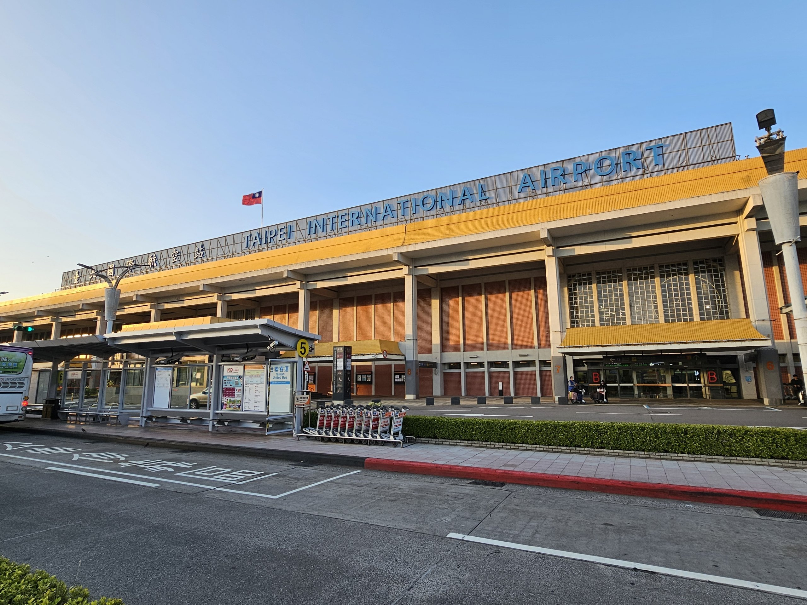
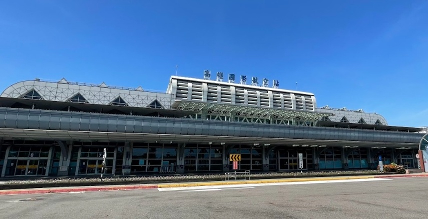
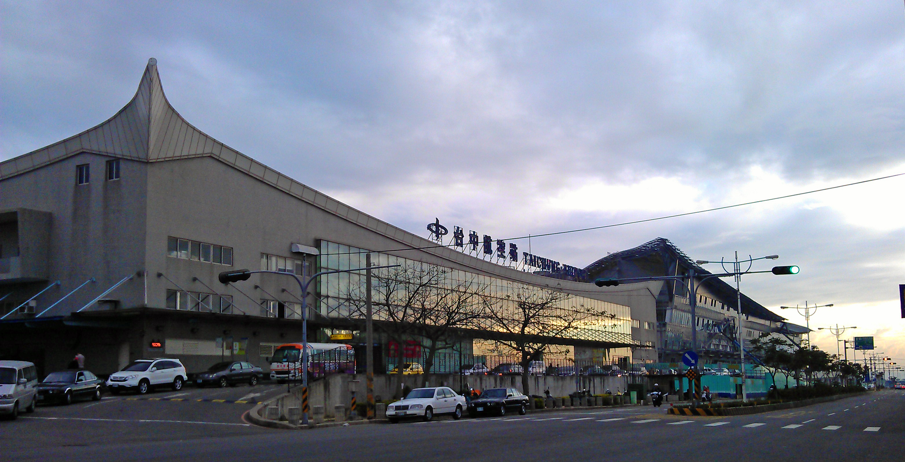

Information about International Airports in Taiwan
Taiwan has several major airports that serve international and domestic flights. The two busiest airports are Taiwan Taoyuan International Airport (TPE) in the north and Kaohsiung International Airport (KHH) in the south. Taipei Songshan Airport (TSA) and Taichung International Airport (RMQ) also provide international connections, especially for regional travel.
Taoyuan International Airport is the largest and busiest airport in Taiwan. Located in Taoyuan City, it mainly serves the northern region including Taipei. The airport currently has two terminals (T1 and T2), with a third terminal under construction. It is connected to Taipei and nearby cities via the Taoyuan Airport MRT and is about 40 minutes from Taipei by road.

http://www.taoyuan-airport.com
Contact Information
Taipei Songshan Airport is a centrally located “city airport” inside Taipei. It is convenient for travelers heading directly into the city. TSA serves both domestic routes (such as Penghu, Kinmen, and Taitung) and short-haul international destinations, mainly Japan and China.

https://www.tsa.gov.tw/?culture=2
Contact Information
Kaohsiung International Airport serves southern Taiwan and is located in Siaogang District. It has separate terminals for domestic and international flights. The airport is very accessible thanks to the Kaohsiung MRT (Red Line), which has a station directly connected to the airport.

Contact Information
Taichung International Airport is located in the central-western part of Taiwan. It handles both domestic and international flights and is about 20 km from downtown Taichung. It is less crowded compared to Taoyuan Airport, making it a comfortable option for travelers visiting central Taiwan.

Contact Information